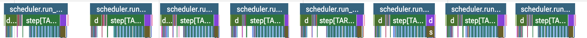
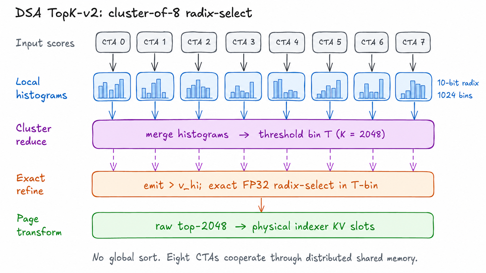
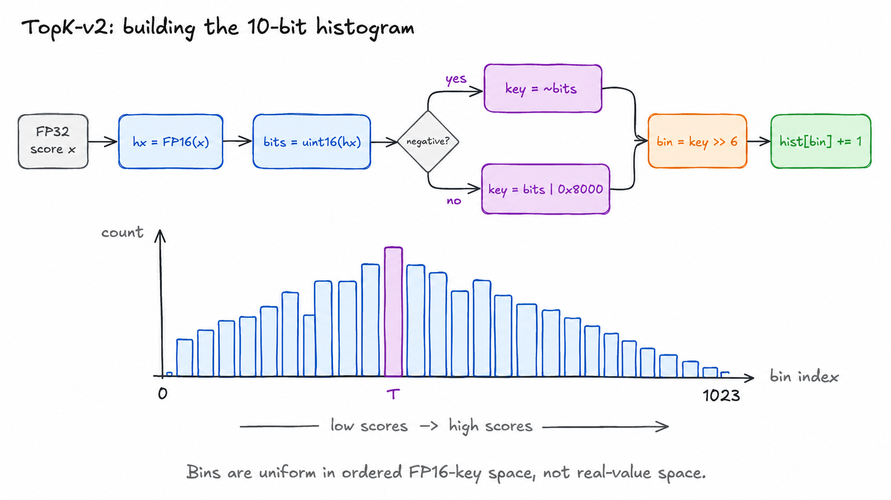
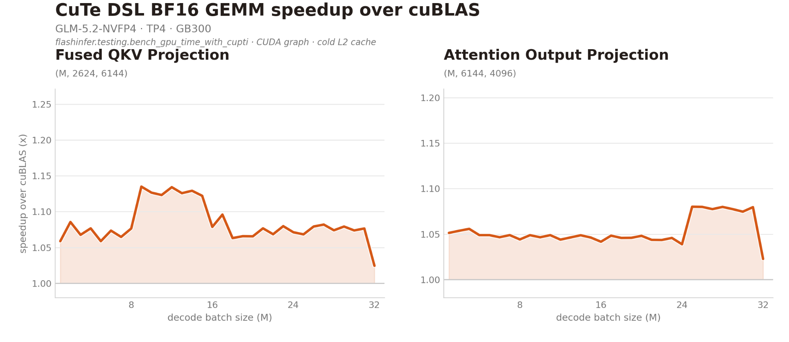
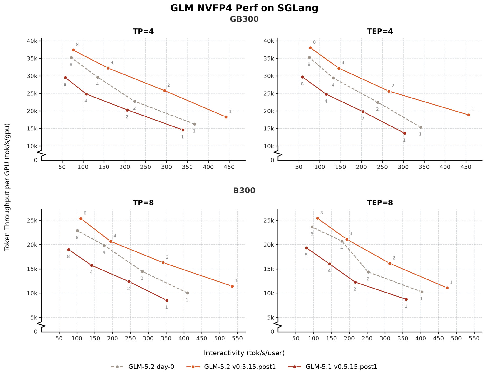
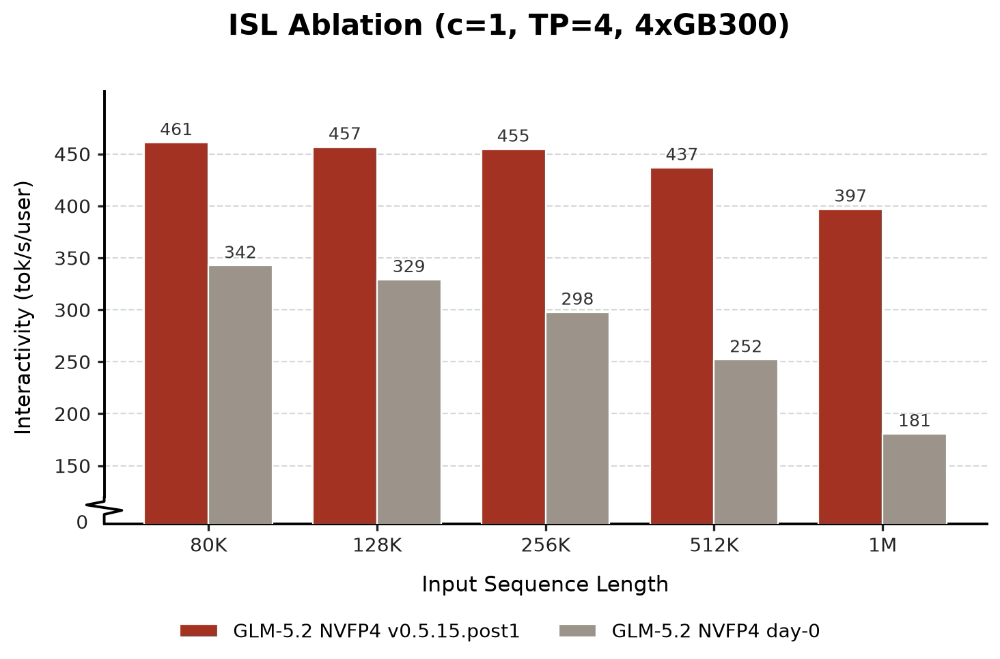

图0：Day-0版本与v0.5.15.post1版本在8×B300上的性能对比。 (fig01)

图1：批大小为1时的解码情况，上图为Spec v2优化前，下图为优化后。开启后run_batch各迭代之间不再有气泡。 (fig02)

图1：批大小为1时的解码情况，上图为Spec v2优化前，下图为优化后。 (fig03)

图2：TopK-V2把一个长得分行切分到8个CTA，每个构建本地10-bit直方图；cluster级归约定位第2048大得分所在bin。 (fig04)

图3：TopK-V2构建直方图时，每个FP32得分舍入到FP16并转为无符号key，高10位选bin，粗粒度直方图只定位边界区域。 (fig05)

图4：在目标模型验证下、批大小1、6个draft token时，TopK-V1与TopK-V2的内核延迟对比（两者都把Top-K与页表变换融合）。 (fig06)

图5：DSA索引器前导内核：融合前与融合后的对比。 (fig07)

图6：CuteDSL BF16 GEMM相对CuBLAS GEMM的提速，跨不同批大小。 (fig08)

图7：GLM 5.2 NVFP4在SGLang上的性能帕累托（Pareto）曲线。 (fig09)

图8：随输入序列长度变化的消融（ablation）测试（模拟接受长度5以提高可复现性）。 (fig10)